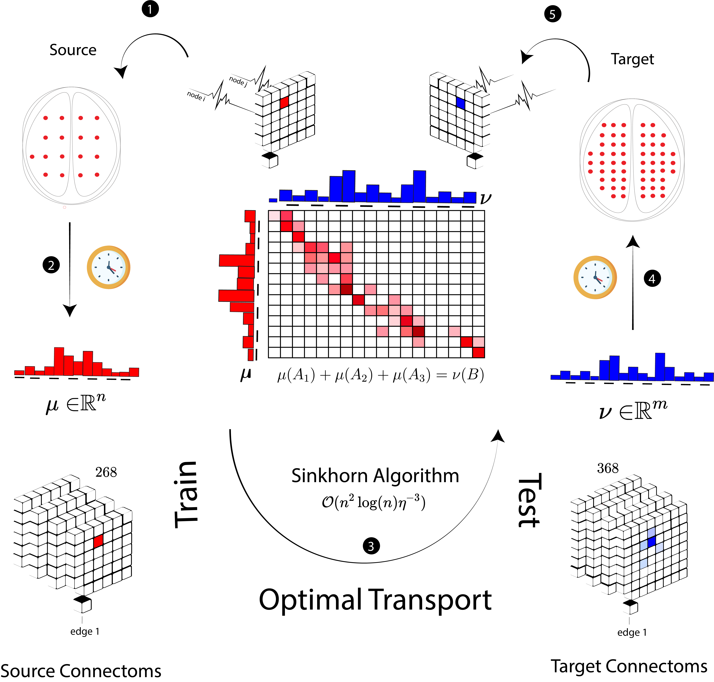

Optimal Transport and Brain Imaging
Functional connectomes, derived from functional magnetic resonance imaging (fMRI), are widely used to study the functional organization of the human brain. Individuals spend a limited amount of time in the scanner while resting (i.e., resting-state connectomes) or performing specific tasks (i.e., task-based connectomes). Removing head motion, skull stripping, registering to a common space, and deriving time series from a given atlas are typical things a researcher needs to do before any further analysis. Yet, traditionally different institutes and schools develop their own atlas or keep using a well-known set of brain mappings for their studies. Constructing connectomes that are derived differently in terms of geometry leads to an inconsistent pool of data that makes downstream analysis impossible unless we run all the preprocessing steps together using the same atlas. In MICCAI 2021, Amin Karbasi, Dustin Scheinost, and I proposed a new data-driven algorithm based on optimal transport to generate time series data for individuals without additional preprocessing steps.
The main idea is pretty simple; optimal transport is defined over probability distributions with different supports and possibly different geometries. Suppose there are $m$ sources $x_1, \ldots, x_m $ for a commodity, with $a(x_i)$ units of supply at $x_i$ and $n$ sinks $y_1, \ldots, y_n$ for the commodity, with the demand $b(y_j)$ at $y_j$. If $a(x_i,\ y_j)$ is the unit cost of shipment from $x_i$ to $y_j$, find a flow that satisfies demand from supplies and minimizes the flow cost.
Similarly, we define a transportation problem between $\mu$, the activity levels of $n$ brain regions based on a source atlas, and $\nu$, the $m$ target-atlas values. Once we have an optimal mapping between $\mu$ and $\nu$ based on a given cost matrix $M$, transportation comes for free. Therefore, we use training data between these two atlases to learn the mapping and then use it as a universal plan to obtain $\nu$ for individuals whose target-atlas values are unavailable. This process repeats across time frames to construct the final time series data. Using this algorithm, people don’t need to rerun all preprocessing steps to obtain target-atlas time series data. This method particularly shines when raw data are not available for reasons including privacy or storage limits.
